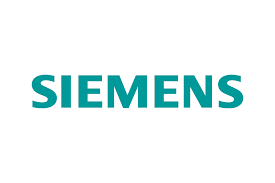
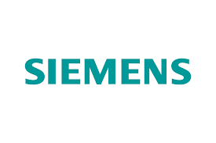
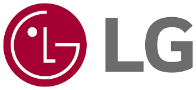
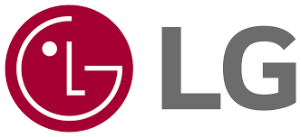

Чому обирають нас у Харкові
- Досвідчені майстри
- Виїзд за 1–3 години
- Безкоштовна консультація
- Прозоре ціноутворення
- Гарантія до 12 місяців
Ремонтуємо всі бренди
 



 

та інші
Заявка на ремонт пральної машини
Відгуки клієнтів
Тут будуть відгуки клієнтів...
Часті питання
- Скільки чекати майстра?
- Від 1 до 3 годин залежно від району.
- Яка гарантія?
- Від 3 до 12 місяців.
- Скільки коштує діагностика?
- При ремонті — безкоштовно.